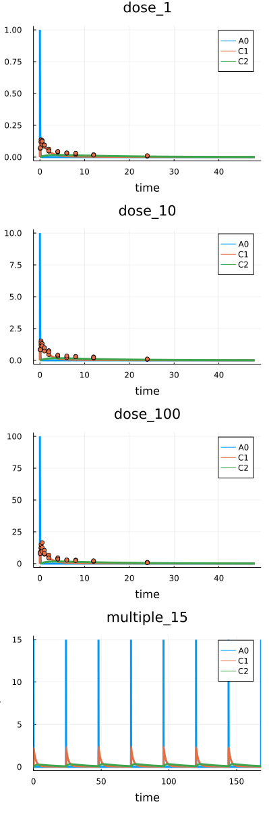

Fitting. Measurements
The fit can be used to evaluate a model parameters based on experimental data. Typically the method is applied for the whole platform but can be also used for selected Scenarios.
_Before start be sure you have the latest HetaSimulator.jl version. If you don't have it reinstall using the Julia environment.
] # switch to Pkg mode
add HetaSimulatorWorking example
This lesson uses the following model code.
File can be downloaded here: index.heta
// Compartments
Vol0 @Compartment .= 1;
Vol1 @Compartment .= 6.3;
Vol2 @Compartment .= 10.6;
// Species
A0 @Species {compartment: Vol0, isAmount: true, output: true} .= 0;
C1 @Species {compartment: Vol1, output: true} .= 0;
C2 @Species {compartment: Vol2, output: true} .= 0;
// Reactions
v_abs @Reaction {actors: A0 = C1} := kabs * A0;
v_el @Reaction {actors: C1 =} := Vol1 * (kel * C1); // Vol1 * (kmax * C1 / (Km + C1));
v_distr @Reaction {actors: C1 = C2} := Q * (C1 - C2);
// Parameters
dose @Const = 20;
kabs @Const = 20;
kel @Const = 0.5;
Q @Const = 1.0;
// kmax @Const = 3e3;
// Km @Const = 9e3;
// single dose event
sw1 @TimeSwitcher {start: 0};
A0 [sw1]= dose;
// multiple dose event, default off
sw2 @TimeSwitcher {start: 0, period: 24, active: false};
A0 [sw2]= dose;
// parameters for fitting
sigma1 @Const = 0.1;
sigma2 @Const = 0.1;
sigma3 @Const = 0.1;Download the file or create index.heta with VSCode in the working directory.
Load the platform into the Julia environment. You should clarify the path to the modeling platform as the first argument. Today we will use the same working directory where the index.heta file is located.
using HetaSimulator, Plots
p = load_platform(".")The following table describing 4 scenarios will be used.

File can be downloaded here: scenarios.csv
Load scenarios into the platform.
scn_df = read_scenarios("./scenarios.csv")
add_scenarios!(p, scn_df)Load measurements
Experimental data can be used for both: visualizing and parameter estimation. To read more about measurements tables format see the documentation.

File can be downloaded here: measurements.csv. The presented dataset includes the measurement of C1 with unknown variance equal for a particular condition.
The measurement table can be loaded into platform using read_measurements and add_measurements! functions.
measurements_df = read_measurements("./measurements.csv")90×5 DataFrame
Row │ t measurement prob.mean prob.sigma scenario
│ Float64 Float64 String String Symbol
─────┼────────────────────────────────────────────────────────
1 │ 0.08333 0.0686283 C1 sigma1 dose_1
2 │ 0.08333 0.0684679 C1 sigma1 dose_1
⋮ │ ⋮ ⋮ ⋮ ⋮ ⋮
89 │ 24.0 1.036 C1 sigma3 dose_100
90 │ 24.0 0.724612 C1 sigma3 dose_100
86 rows omittedadd_measurements!(p, measurements_df)
# display platform content
pPlatform with 1 model(s), 4 scenario(s), 90 measurement(s)
Models: nameless
Scenarios: dose_1, dose_10, dose_100, multiple_15If we run the simulations and then plot them we see the simulation results together with measured values.
# simulate all
res = sim(p)4-element Vector{Pair{Symbol, SimResult}}
:dose_1 => 80x3 SimResult with status :Success.
:dose_10 => 100x3 SimResult with status :Success.
:dose_100 => 124x3 SimResult with status :Success.
:multiple_15 => 668x3 SimResult with status :Success.# plot all default
plot(res)
To display in more convenient way one can use the additional yscale and ylim arguments.
# plot C1, C2 in log scale
plot(res, vars=[:C1,:C2], yscale=:log10, ylim=(1e-3, 1e3))
Fitting
Before we run the optimization procedure we should select the parameters to optimize with the starting values.
sigma1, sigma2, sigma3 are not included in the main model code. They describe just the variability of error for the scenarios: dose_1, dose_10 and dose_100.
# fitted parameters
to_fit = [
:kabs => 8.0,
:Q => 4.0,
:kel => 2.2,
:sigma1 => 0.1,
:sigma2 => 0.1,
:sigma3 => 0.1,
]
res_optim = fit(p, to_fit) # default fitting┌ Warning: Scenario ":multiple_15" has no measurements. It will be excluded from fitting.
└ @ HetaSimulator y:\HetaSimulator.jl\src\fit.jl:77
FitResult with status :XTOL_REACHED
Status: XTOL_REACHED
Optimal values: [:kabs => 18.868605026704916, :Q => 4.043662480774219, :kel => 0.17104243648378176, :sigma1 => 0.020347955494158528, :sigma2 => 0.31561050699802246, :sigma3 => 0.5716026958426483]
OF value: 140.96503722971997
OF count: 8612The scenario multiple_15 does not include any measurement. That's why we see the warning message here. This is not an error.
The optimal value of the parameters can be obtained with optim method applied for FitResult.
# optimal parameters
optim(res_optim) 6-element Vector{Pair{Symbol, Float64}}:
:kabs => 18.868605026704916
:Q => 4.043662480774219
:kel => 0.17104243648378176
:sigma1 => 0.020347955494158528
:sigma2 => 0.31561050699802246
:sigma3 => 0.5716026958426483To display the simulations with updated parameters values we can use parameters argument in sim.
# check fitting quality
res = sim(p, parameters = optim(res_optim))
plot(res, yscale=:log10, vars=[:C1,:C2], ylims=(1e-3,1e2))
Fitting with parameters table
The parameters set that is used for fit can also be taken from tables. The description of table format can be found in documentation.
For example we will use the following table.

File can be downloaded here: parameters.csv The table can be loaded with read_parameters method.
# read parameters from table
params_df = read_parameters("./parameters.csv")6×6 DataFrame
Row │ parameter scale lower upper nominal estimate
│ Symbol Symbol Float64 Float64 Float64 Bool
─────┼────────────────────────────────────────────────────────
1 │ kabs lin 1.0 100.0 8.0 true
2 │ kel log 0.0 60.0 2.2 true
3 │ Q log10 1.0 80.0 4.0 true
4 │ sigma1 lin 0.0 10.0 0.1 true
5 │ sigma2 lin 0.0 10.0 0.1 true
6 │ sigma3 lin 0.0 10.0 0.1 trueAs previously we can use this DataFrame for optimization.
res_optim = fit(p, params_df)┌ Warning: Scenario ":multiple_15" has no measurements. It will be excluded from fitting.
└ @ HetaSimulator
FitResult with status :FTOL_REACHED
Status: FTOL_REACHED
Optimal values: [:kabs => 8.669590504032879, :kel => 0.2299120380231296, :Q => 3.386457652767808, :sigma1 => 0.010105725225267037, :sigma2 => 0.09951673713071268, :sigma3 => 0.6024808584834973]
OF value: -101.7645013649068
OF count: 417Additional optimization-specific options
Internally HetaSimulator uses NLopt library. We can choose the optimization algorithm as well as additional options.
Read more here: https://nlopt.readthedocs.io/en/latest/NLopt_Algorithms/
res_optim = fit(
p,
params_df,
fit_alg = :LN_SBPLX,
ftol_abs = 1e-5,
ftol_rel = 0,
maxeval = 10^6
)
optim(res_optim)There are several options which are available for a user. To know more read about fit in API documentation.
fit_alg: fitting algorithm. Default is:LN_NELDERMEADftol_abs: absolute tolerance on function value. Default is0.0ftol_rel: relative tolerance on function value. Default is1e-4xtol_rel: relative tolerance on optimization parameters. Default is0.0xtol_rel: absolute tolerance on optimization parameters. Default is0.0maxeval: maximum number of function evaluations. Default is1e4maxtime: maximum optimization time (in seconds). Default is0